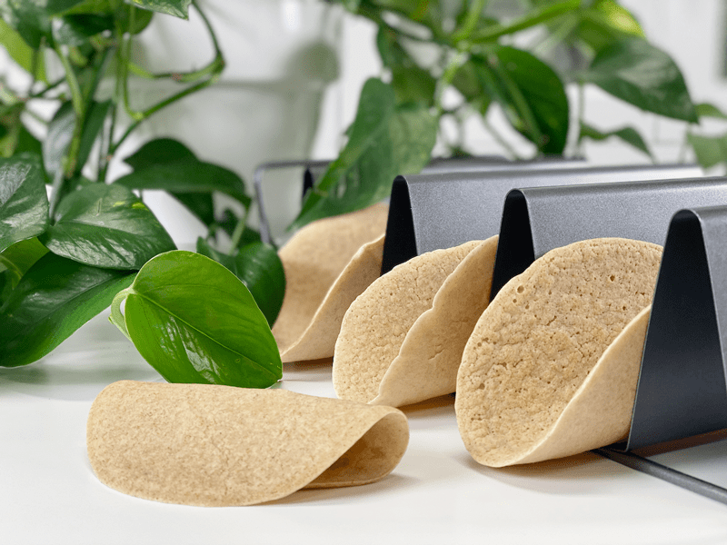
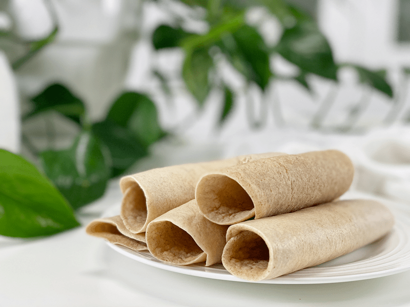
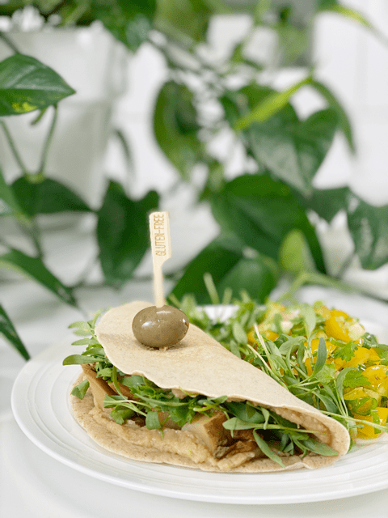
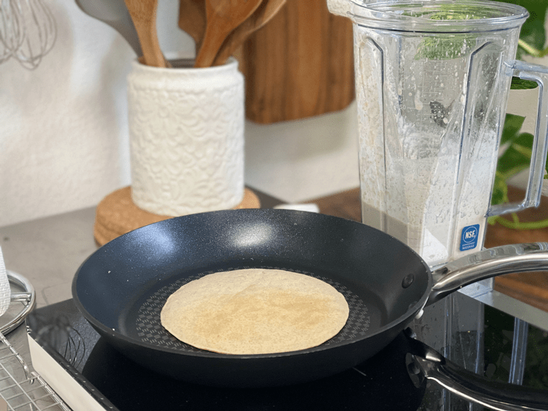
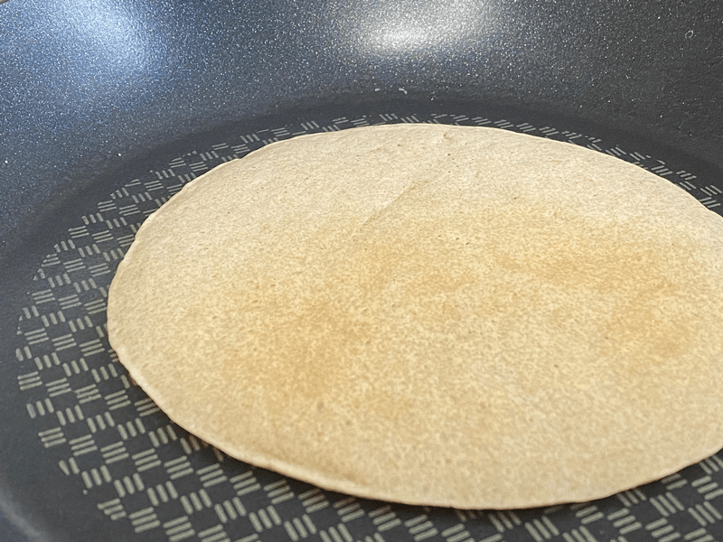
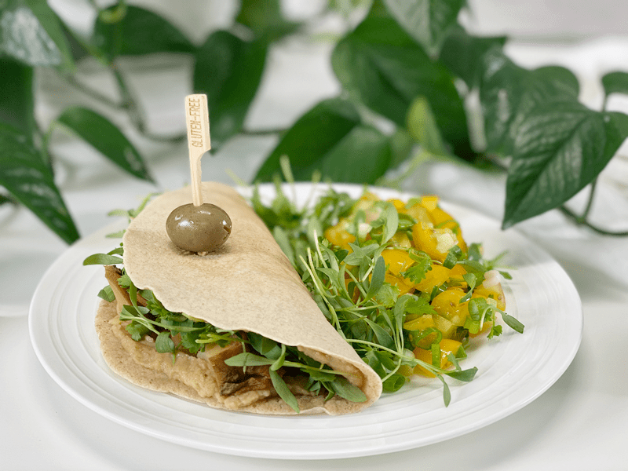

Tigernut Flour and Oat Wraps | Cooked | Oil-Free
Today, I am bringing to you a gluten-free, vegan, nut-free, seed-free, oil-free wrap. These wraps are relatively neutral in flavor, making them perfect for any filling, sweet or savory. To date, these wraps are the most flexible, pliable ones that I have made. If you’re not careful, you might find yourself playing around with them before they ever hit your plate — speaking from experience.

When it comes to creating recipes, there is always a little science that goes on in the background, especially when it comes to cooking or baking gluten-free “bread-like” wraps. Gluten-free flours are a blessing for so many people who suffer from gluten allergens, but most of these flours require being paired up with another flour to get those gluten-protein-characteristics. Today, I used the combo of tigernut flour and oats. Let’s see what I came up with.
Why I Used Tigernut Flour an d Oats
Tigernut Flour
- Texture-wise, it is somewhat grainy, similar to almond flour.
- It has a nutty, somewhat buttery, sweet flavor.
- It’s a great source of Resistant Starch (RS), which is a prebiotic fiber that resists digestion and fuels our healthful probiotic bacteria. You can learn more about RS (here).
- Tigernut flour is super allergy-friendly as it is gluten-free, nut-free, and grain-free. In fact, it is actually a small root vegetable that originated in Africa. You can read more about it (here).
- It tends to work well in combination with other flours and starches such as coconut flour, almond flour, gluten-free oats, and arrowroot or potato starch. Hence why I added oats to this recipe.
Gluten-Free Rolled Oats
- Due to the natural starches found in oats, once water is added, it creates a binding effect that helps with these wraps.
- They are an abundant source of complex carbohydrates and water-soluble fiber (produces a feeling of satiety), as well as group B vitamins, omega 6 fatty acids, and some minerals, and trace elements such as zinc, copper, or manganese.
- When purchasing rolled oats, make sure that the package reads “gluten-free” to ensure that they haven’t been cross-contaminated with other gluten-containing grains.

I am showing you just how flexible this wrap is!
Techniques and Tips
- These wraps don’t require any rolling or shaping; you pour the batter directly on to the pan and let the magic unfold (spread). Typically, when making wraps, I like to use my griddle, but that won’t work for these since you need to lift and tilt the pan back and forth for the batter to spread evenly.
- These wraps don’t brown much while cooking; instead, they go from cream to tan. Because of this, you want to make sure that you don’t overcook them. I noticed that if they are cooking too long on one side, the edges turn more of a white color, which leads to crispier edges, which can interfere with the flexibility.
- Why do some of your wraps recipes puff up while others (like these) don’t? Oat flour puffs up under the right circumstances; it just depends on what other ingredients it is paired with. If combined with heavier flours or sticky ingredients like bananas, it may need a leavening agent, such as baking powder, to help it puff up, yielding a lighter texture. In this case, I used equal measurements of tigernut flour and rolled oats (which produced less volume than the tigernut flour, since I used oats in their whole form). Since it isn’t the dominant flour, the wraps don’t puff up while baking. I hope that makes sense.
- Feel free to use different spices or herbs. If you want to use these wraps in a sweet application, omit the savory spices, and add a little sweetener to them.
Well, I think I will “wrap” this up. I hope you enjoy these wraps. Please leave a comment below and have a blessed day, amie sue

Ingredients
Yields 7 (6″ – 1/3 cup measurement per wrap)
- 1 1/2 cups water
- 3/4 cup gluten-free rolled oats
- 3/4 cup tigernut flour
- 1/2 tsp onion powder
- 1/4 tsp garlic powder
- 1/2 tsp sea salt
Preparation
- In the blender, combine the water, oats, tigernut flour, onion powder, garlic powder, and salt. Process on high speed until very smooth. Pour batter into a bowl to ladle out premeasured amounts to the pan.
- If you aren’t concerned about making evenly sized tortillas, you can pour the batter straight from the blender carafe into the pan.
- Heat a well-seasoned cast-iron or nonstick pan over medium-high heat until very hot.
- If you are not sure if your pan is nonstick, add a quick spritz or swipe of oil to the pan.
- Ladle 1/3 cup of batter into the hot pan and immediately lift and tilt so that the batter spreads to about a 6- or 7-inch circle.
- The thickness of the wraps will depend on how much batter you use for each.
- I found that 6″ was the most manageable size to handle when flipping.
- Cook for 2 minutes until set; flip over and cook about 1 minute longer. Flip, cook for 30 seconds, flip and cook for another 30 seconds. Done. Transfer to a plate or cooling rack.
- You know when to flip with bubbles form over the entire surface, pop, and don’t close back up.
- The dough doesn’t darken as it cooks, so don’t let the coloring fool you.
- Repeat with the remaining batter.
Storage and Reheating
- Slip a piece of parchment paper in between each wrap, then slide them into an airtight container or bag. Fridge: Store leftover wraps in the refrigerator for 5-7 days. Freezer: These wraps can be frozen for 3 months (maybe longer).
- When you want to eat them, remove one or more from the freezer and thaw on the countertop or in the fridge for a few hours. Place a non-stick pan over low heat or in the oven for a few minutes, warming each side.
-

-
In this photo I have already flipped the wrap. I swore I took one of the other side cooking, but it disappeared in the Cloud!
-

-
Here is a close-up of it when done cooking. It stays light in color and doesn’t get many brown spots on it. If cooked too long, the edges will turn a pale cream color and will get a bit crunchy for folding.
-

-
After making up a batch of wraps, I made myself some lunch. I spread hummus on the wrap and added chunks of cooked sweet potato and arugula microgreens to it. It held up perfectly… all the way to the last bite.
© AmieSue.com